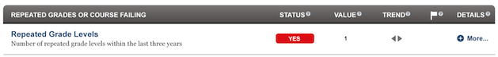

Dashboard Metrics


Repeated Grade Levels
Background
Student Dashboard Metrics
The Repeated Grade Levels metric indicates whether or not a student has repeated a grade level in the past three years. Repeating a grade level is a clear indicator that a student is or has been struggling in school. Additionally, in focus groups with educators, the Repeated Grade Levels metric was repeatedly called out as important to elementary educators.
Primary Metric
- Repeated Grade Levels: the number of grade levels a student has repeated in the last three years.
Related Metrics
- Subject Area/Course Grades – Failing: whether students are failing one or more course grades, with trend comparisons to prior grading periods.
- State Assessment Performance: reports historical, detailed and trend data on a student’s state assessment performance in all tested subjects: reading/ELA, writing, math, science and social studies at the applicable grade levels. Performance on alternative tests, including those for special education and Limited English Proficient students, is also reported.
User Interface
Dashboard Example
Figure 1 shows the Repeated Grade Levels metric as seen on the student dashboard.

Figure 1 Ed-Fi Repeated Grade Levels Metric
Visibility Rules
This metric is grayed out if three years of data are not available.
Status Definition
The Status indicator is determined by campus-specific thresholds (campus goals) which are set at the district level. The Ed-Fi default threshold is zero grade levels repeated.
Metric Indicator | Trend Comparisons | |||
Metric Name | Sub-metric Name | Metric Status Indicator | Compares: | To: |
Repeated Grade Levels | not applicable | Red (Yes) = If student has repeated one or more grades in the last three years Green (No) = If student has not repeated any grades in the last three years. | Prior year number of repeated grades | Prior two year number of repeated grades |
(a) The Value column displays the total number of repeated grades in the last three years.
Trend Definition
In a full Ed-Fi implementation, if the first grading period is not complete, Ed-Fi shows prior year and final grades for each subject. When the first grading period is complete, the trend shows the difference between first grading period and final year grade from the prior year.
Table 3 lists the trend indicators. The trend is not implemented for Phase 2; this table is for documentation purposes.
Trend Indicators: Objective is to indicate Repeated Grade Levels | |||
| Up green | If the student did not repeat a grade level in the previous third or second year, but is repeating the last year's grade level | |
| Unchanged | If there is no change in the number of grade levels repeated between the third, second and last year | |
| Down red | If the student repeated a grade level in the third or second year back, but not in the last year | |


Periodicity
Recommended Load Characteristics for Repeated Grades | |
Calendar | Beginning of school year |
Frequency of data load | Annually |
Latency | Annually |
Interchange schema | Interchange-StudentGrade.xsd |
Tooltips
The standard tool tips for the Repeated Grade metric definition, column headers, and help functions display for this metric.
The following are tooltips specific to the Repeated Grade metric:
- "+More" indicates drill down to view detail
Business Rules
The Repeated Grade Levels displays the number of grade levels repeated after Grade 2 for the last three years.
Data Assumptions
- District sets the value that drives the student thresholds (numeric and/or letter grade).
- The number of grade levels repeated is based on course transcript history (if available) for grades 2-5.
Computed Values
Table 5 defines how values for this metric are calculated. The result of the calculation is displayed in the Value column.
Metric Values | |
Repeated Grade Levels | Total of the number of grade levels repeated |
Data Anomalies
Data Anomalies
Best practice is to use footnotes to address these anomalies:
- Loading of data from each grading period
- Late enrollees may not have previous grading period grades from another school or prior years
- Missing transcripts for transfer students.
Footnotes
- Late enrollee students that have not been present for a full grading period should be noted by a designated icon.
- Missing transcripts for transfer students.
Date of Refresh
Best practice is for the date of last data refresh to appear next the metric in the following format:
- (Through 2010)
Implementation Considerations
Student Identity
Maintaining a correct and consistent student identity is at the center of any education data system. Most systems use some sort of unique identifier. However, sometimes this identifier is entered incorrectly or sometimes different systems use different identifiers.
The UDM XML supports the interchange of multiple types of identifiers. The StudentReference is a complex type within the UDM to maintain the referential integrity of the student (that is, ensuring that the data associated with each student is accurately associated with the right student). The complex type of the student reference assists with implementing the accurate matching algorithm to identify a student by utilizing any of the individual attributes (e.g., Student Unique State ID, Student ID, Campus Local ID (with Campus ID), Name and Birth Date). For example, if the Student Unique State ID is unknown, you can find the student’s identity by their Student ID, First Name, Last Name and Birth Date.
Attendance and Grade Metrics for Elementary School
Ed-Fi uses a student's assignment to formal class periods to determine both attendance and grades. Most elementary schools do not have a standard methodology for capturing attendance data. A teacher may take attendance in the classroom, but not formally record it. The same is true for grades, especially in kindergarten and first grade. In most cases, Ed-Fi metrics will not display attendance data for these grade levels and grades may not display in the metrics until the end of the year, if at all.
Numeric or Letter Grading System
Best practice is for the metric to support both numeric and letter grading systems.
Frequency of Uploading Data
The metric computation implementation may vary depending on the periodicity of loading the data.
Prior Year Grades
Data for the prior three years must exist for this metric.
Indicator and Metric Definitions
In researching best practices across leading districts, course failures were identified as a leading indicator of drop outs. There are several ways to capture this indicator in the form of a metric including course failures, repeated grade levels and repeated courses. With respect to repeated grade levels, one implementation of this metric is defining it as the number of grade levels a student has repeated in the last three years. Other ways that districts measure this indicator include:
- Ninth Grade Repeater: whether or not the student is in ninth grade for the first time.
- Persistence: whether or not the student was enrolled the prior year and persisted to the next grade level.